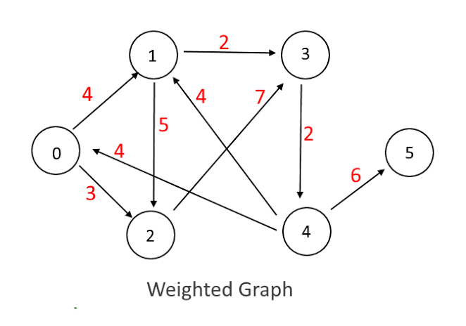
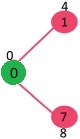
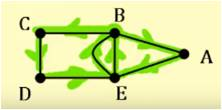
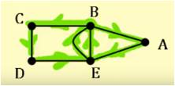

Weighted Graph?
A graph having weights i.e. a certain value assigned to the edges.

6 / 18
Step 1: Consider two sets P and T. P contains those points which have been used while the T contains unused points/value.
Step 2: Let the distance between adjacents of vertex 0 be
L(7)=weight=8;
L(1)=weight=4;// Also tells the distance between vertex 0 and vertex 1.
while others
L(2)=L(3)=L(4)=L(5)=L(6)=L(8)= infinite;
Step 3: Find the Element having minimum value among all and put it in the set P.
Now here P={0,1} T={2,3,4,5,6,7,8}
Step 4: Suppose we want to find shortest path from 0 to 4. So we need to find the element having minimum value
put it in P. Repeat until 4 comes in the set P.

 
